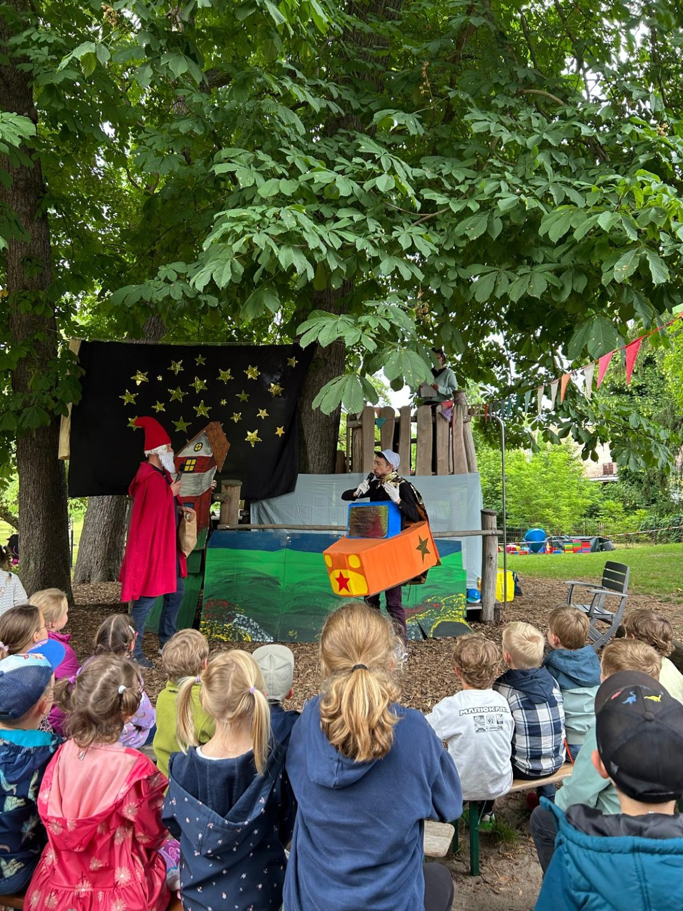

Spiel & Bildung
Spiel- und Lernmaterialien sowie Angebote, die den Kita-Alltag bereichern.
Herzlich willkommen beim Förderverein Kita Klostergarten e.V. in Kloster Lehnin.
Wir unterstützen die Kita Klostergarten mit Ideen, Engagement, Spenden und Projekten, damit Kinder noch mehr Möglichkeiten zum Spielen, Lernen, Entdecken und gemeinsamen Erleben bekommen.
Jetzt Mitglied werdenJetzt unterstützen
Spiel- und Lernmaterialien sowie Angebote, die den Kita-Alltag bereichern.
Unterstützung besonderer Projekte, Ausflüge und gemeinsamer Aktionen.
Ideen und Anschaffungen für eine abwechslungsreiche und kinderfreundliche Außenanlage.
Ein kindgerechter Barfußpfad soll Motorik, Gleichgewicht, Sinneswahrnehmung und Naturerfahrung fördern.
Zum Projekt